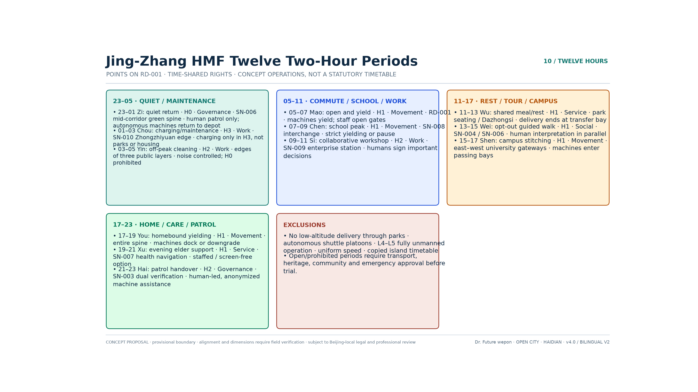
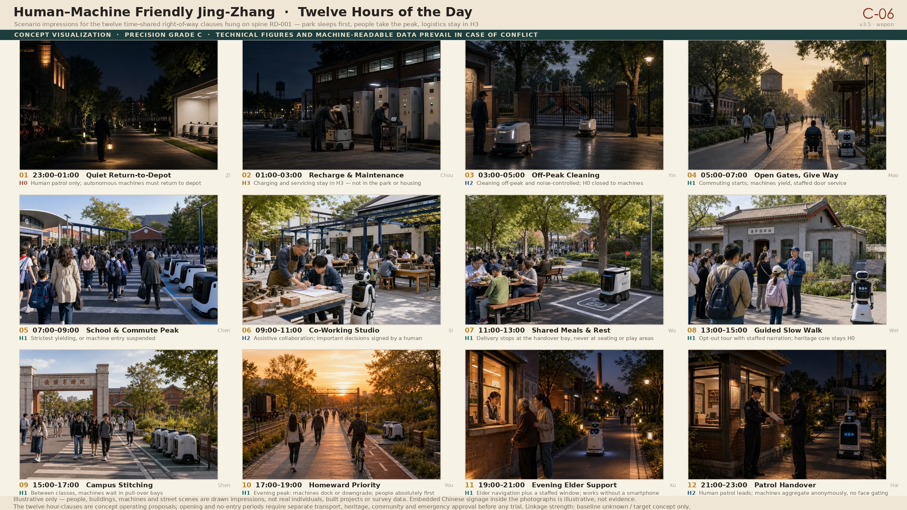
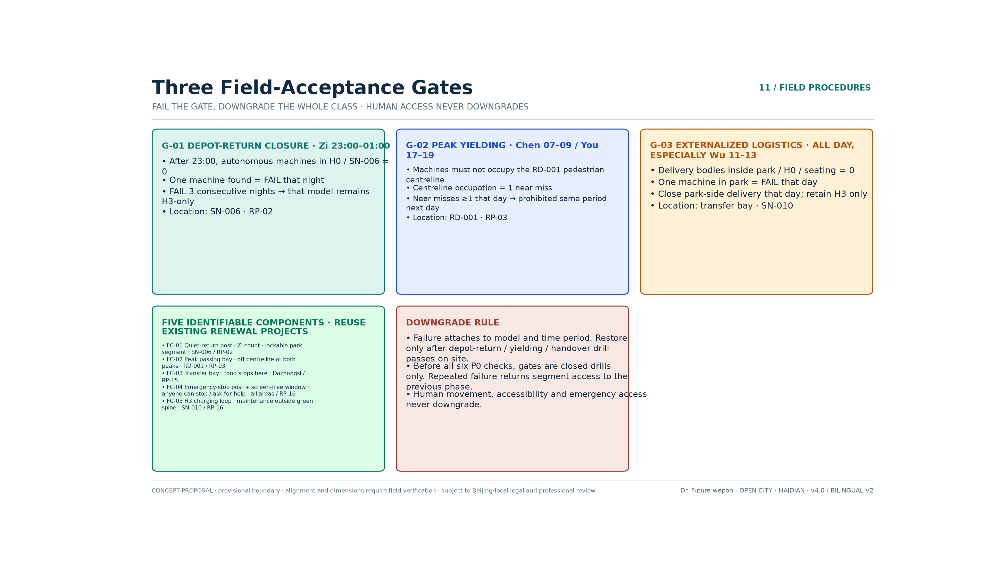
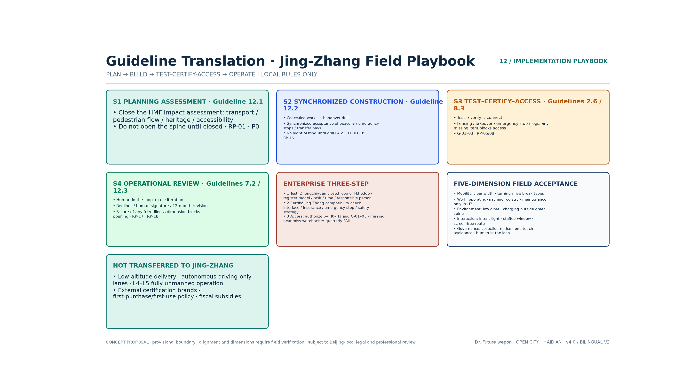

Overview map · geometric alignment of the shared spine and the key areas
This drawing is rendered directly from the submitted GeoJSON, with no cosmetic displacement. The dashed outer frame is the provisional boundary, used only for self-checking and discussion; it must never be passed off as an official red line. The spine alignment is indicative in precision (approx. ±200 m) and must be replaced by a surveyed centreline.
Five non-negotiable principles
Life, safety, dignity and the final decision come first
Machine access is conditional on all-age human access
Machine identity, task and movement intent stay visible
Human alternatives, emergency stop, takeover, insurance, complaints
Public service is never traded for facial recognition
Three-tier scope · key areas · land-use zoning
Coordinated study scope approx. 43.6 km²; overall design scope approx. 11.4 km² (provisional SITE-001); the key areas are Zhongzhi Park, the AI Origin Community and Dazhongsi, in an area ratio of about 52:28:20. Land-use zoning, building footprints, transport and slow mobility, and blue-green public space all derive from the same provisional boundary system, and must be recomputed once the official polygon is available.
Land-use zoningBuildingsTransport and slow mobilityBlue-green public spaceAI scenariosTwin substrates · Five Settings and Five Friendliness Principles
Twin substrates
Universal accessibility physical spaceAuditable digital-twin operationFive settings
MobilityWorkServiceSocial interactionGovernanceFive evaluation dimensions
Movement-friendlyWork-friendlyEnvironment-friendlyInteraction-friendlyGovernance-friendly13 scenario cards land on 12 composite nodes; 4 landmarks and 18 conceptual renewal projects.
H0–H3 tiered right of way
In ordinary pedestrian space the reference machine speed is ≤1.2 m/s; all other speeds await local risk assessment and approval, and 20 km/h is not presumed.
Twelve Shichen · time-slot shared movement in Jing-Zhang
Twelve operating clauses across one day hang on the shared spine and on existing nodes: let the park sleep first, then let people have the peak, and keep logistics on H3 only. This is not the Fuxing Island timetable with the place names swapped.


Must not be written into this clock: low-altitude delivery across the park, platooning of self-driving shuttles, L4–L5 full autonomy, or a blanket speed limit.
Three field acceptance gates · fail one and the whole corridor is downgraded
Three of the twelve clauses are raised to gates that can be counted on the spot. A failure is recorded against the machine type and the time slot; swapping in another machine to keep occupying the route is not accepted. Human passage is never downgraded.

Until P0 is complete, only closed drills are run. If any gate fails repeatedly, the opening permission for that segment reverts to the previous stage.
Guideline translation · the Jing-Zhang implementation playbook
Only the procedures of the Fuxing Island guideline are translated, not the scenarios on the island. The four stages hang on the existing gates, field components and renewal projects.

Not carried into Jing-Zhang: low-altitude delivery, dedicated autonomous-driving lanes, L4–L5 full autonomy, brands certified elsewhere, first-purchase and first-use schemes, and fiscal subsidies.
Whole-lifecycle governance gates
- Before entry: classification, safety inspection, insurance, and data and accessibility impact assessment
- In operation: geofencing, identity and intent signalling, logs, emergency stop, human safety marshal
- In an anomaly: protect people first; safe degradation on network loss, low battery or positioning failure
- After operation: review of incidents, near misses and complaints; downgrade or exit if standards are not met
Taskbook coverage
- One spine and three zones, Five Settings and Five Friendliness Principles, many nodes and twin substrates
- Eight categories of human users plus six categories of machine agents
- Three industrial stages of testing and validation, plus human alternatives
- Public opt-out, privacy, ethics, liability and long-term operation
Drawing precision grades
Can start now: tiered admission, identity and intent marking, human alternatives, emergency stop and takeover, data minimisation, closed testing. Feasible after dedicated studies: the H2 shared-movement cross-section, station-to-city connection, the Qinghuayuan Station quiet segment. Not constructible at this stage: shared-corridor works along the whole line, investment promotion based on the drawings, performance promised on the basis of the drawings.
Two coexisting sets of drawings · provenance and validity
assets/figures/*.en.png: rendered deterministically by scripts from the submitted GeoJSON and metrics.json, reproducible when a third party re-runs them, and used to verify geometry and indicators.assets/figures/concept/*.en.webp: drawn by an image-generation model (OpenRouter / openai/gpt-5.4-image-2) and revised item by item against the v3.1 body text; they convey spatial intent and the relationships between scenarios, and are declared as a set at grade C, positionally indicative.Revised in v3.1.1: the unsupported claim of "low-speed autonomous driving <20 km/h" was withdrawn; dimensions were corrected to approx. 9.7 km north–south and approx. 1.4 km east–west; the three-tier G1/G2/G3 right of way became the four-tier H0/H1/H2/H3; the invented clear width of ≥3.0 m for a machine lane was deleted; the connection-intensity radar lost its solid data area in favour of a dashed "phase target (conceptual)" line and a "baseline to be surveyed" watermark; road network length and node density were synchronised to 41.5 km and 1.24 nodes/km. Where the two sets conflict, the technical verification drawings and the machine-readable data prevail.
v3.2 adds: a brand identity page, an operational map for international communication, and a field-wide differentiation page, strengthening the communication and positioning of Human–Machine Friendly Jing-Zhang.
v3.3 adds: the author's doctoral research, the human–machine friendly method of Artificial Intelligence and the Future City, and the three-stage Fuxing Island industrial pathway are written into the body text; theory is deepened through nodes–corridors–areas–flows–policies and the dual-mode mapping of Mode B, with geometry and recomputed indicators unchanged.
v3.4 renames: the title and brand are unified as Human–Machine Friendly Jing-Zhang and the term "chain corridor" is retired; the spatial objects are renamed the shared spine and the shared corridor.
v3.5 adds: the Jing-Zhang human–machine friendly Twelve Shichen technical drawing, writing time-slot shared movement as twelve clauses across one day, plus concept rendering C-06, a twelve-cell scene rendering.
v3.6 adds: three field acceptance gates and five nameable field components; fail a gate and the whole corridor is downgraded.
v3.7 adds: the human–machine friendly guideline translated into a four-stage implementation playbook and Five Friendliness field acceptance; only the procedure is carried across, not the island's scenarios.
v3.8 fixes: international comparisons are downgraded to method analogies; the offline pages embed an OFL Chinese subset font and depend on no locally installed Chinese font.
v4.0 / Bilingual v2 adds: a full English electronic exhibit cross-linked with the Chinese page, together with an English drawing set; geometry, indicators and the evidence chain are unchanged.
Sources
- OFFICIAL-ANNOUNCEMENT / AGENT-TASKBOOK / SITE-PACKAGE
- SOURCE-REGISTRY / PROCESSED-FACT-PACK
- CASE-FUXING-HMF-GUIDE / CASE-PENGUIN-WECITYX / INDUSTRY-PUBLIC-HAIDIAN-AI
- FONT-NOTO-SANS-SC-OFL
Assumptions
- A-BOUNDARY-001: provisional boundary; recompute once the official red line is published
- A-HMF-PRINCIPLE-001: the basic rights of people come first
- A-HMF-STD-001: parameters are a method translation from case studies
- A-HMF-SPEED-001: speeds outside pedestrian space await assessment and approval
- A-HMF-BASELINE-001: all dedicated human–machine friendly indicator baselines are yet to be surveyed
- A-DIGITAL-TWIN-001: a digital twin is not area-wide personal surveillance
- A-GEO-ALIGN-001: the spine is an indicative centreline, not a surveyed alignment
- A-GEO-PRECISION-001: geometry is declared at the four precision grades A/B/C/D
- A-FIG-CONCEPT-001: concept renderings are representational drawing, declared at grade C
- A-FIG-DUALSET-001: technical verification drawings and concept renderings coexist; the former govern
- A-HMF-HOURS-001: the Twelve Shichen are a conceptual time-slot table and may be trialled only after dedicated review
- A-HMF-GATES-001: the three acceptance gates are a conceptual pilot procedure; failure downgrades the whole corridor
- A-HMF-PLAYBOOK-001: the implementation playbook translates procedure only, not low-altitude flight, dedicated lanes, L4–L5 or certification obtained elsewhere
- A-HMF-CASE-ASSOC-001: international comparisons are downgraded to the author's method analogies and are not evidence from external projects